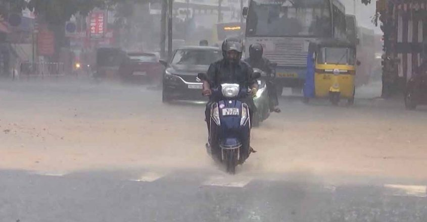

Kerala records season's highest rainfall, Revenue Min chairs review meet
Thiruvananthapuram: Kerala Revenue Minister K Rajan convened a review meeting with district collectors on Wednesday to address rain-related issues in the state.Speaking to the media after the meeting,the minister highlighted that Kerala had experienced the heaviest rainfall of the monsoon season on Wednesday.
According to the Kerala State Disaster Management Authority (KSDMA),the rainfall exceeded normal levels, averaging 69.6 mm across the state Among the districts, Kottayam recorded the highest rainfall at 103 mm In specific regions, Kidangoor received the highest rainfall of the season with 199 mm (in the last 24 hours).
The state has collaborated with the Centre to deploy National Disaster Response Force (NDRF) teams across nine districts: Ernakulam, Idukki, Pathanamthitta, Alappuzha, Malappuram, Kollam, Kozhikode, Thrissur, and Wayanad.
During the meeting, district collectors raised concerns about night travel, leading to discussions on the potential implementation of a night travel ban.Authorities have also been instructed to remove trees considered hazardous.
During the meeting, district collectors raised concerns about night travel, leading to discussions on the potential implementation of a night travel ban.Authorities have also been instructed to remove trees considered hazardous.
Advertisement